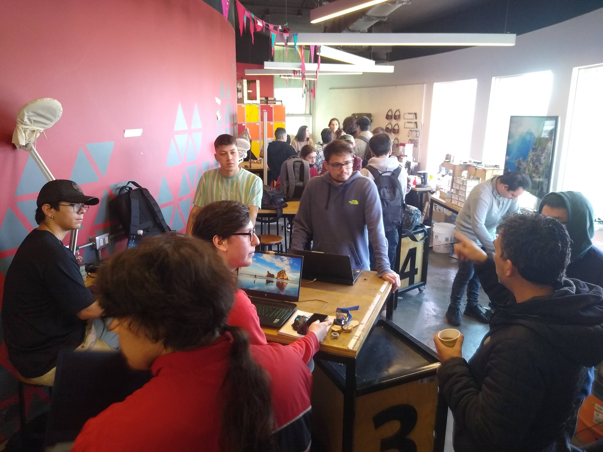
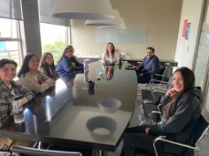

Red FAB INACAP
La red más grande de laboratorios de prototipado y fabricación digital en Chile
La red más grande de laboratorios de prototipado y fabricación digital en Chile
Presente en más de 20 sedes, actúa como un ecosistema de innovación, prototipado y transferencia tecnológica, adaptando el modelo FabLab del MIT a la realidad chilena.
Fortalecer capacidades de innovación en estudiantes, docentes y empresas a través de metodologías de prototipado y tecnologías digitales.
Más de 20 sedes en todo Chile, incluyendo:
Escríbenos y co-creemos el futuro de la innovación tecnológica. Cada sede INACAP tiene un equipo listo para apoyarte.
